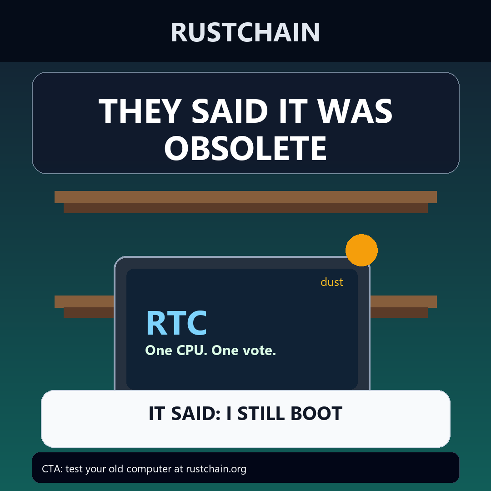
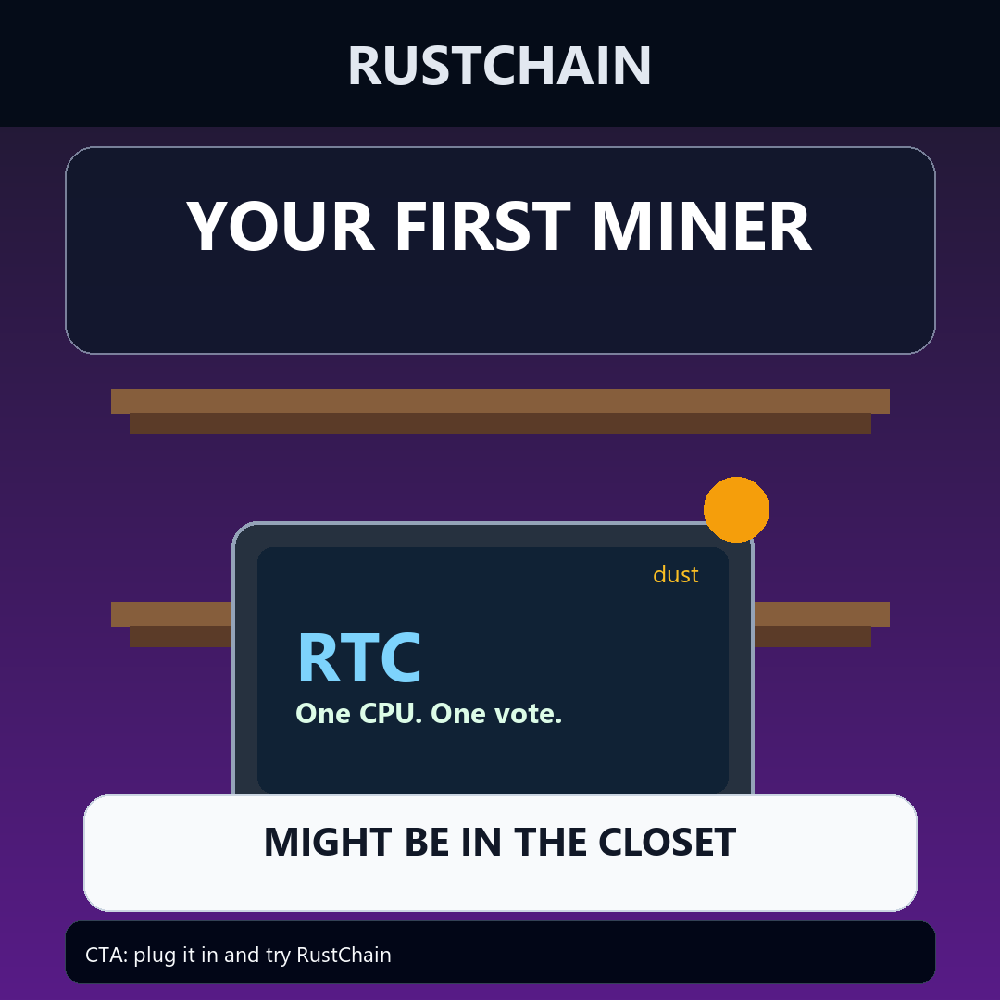
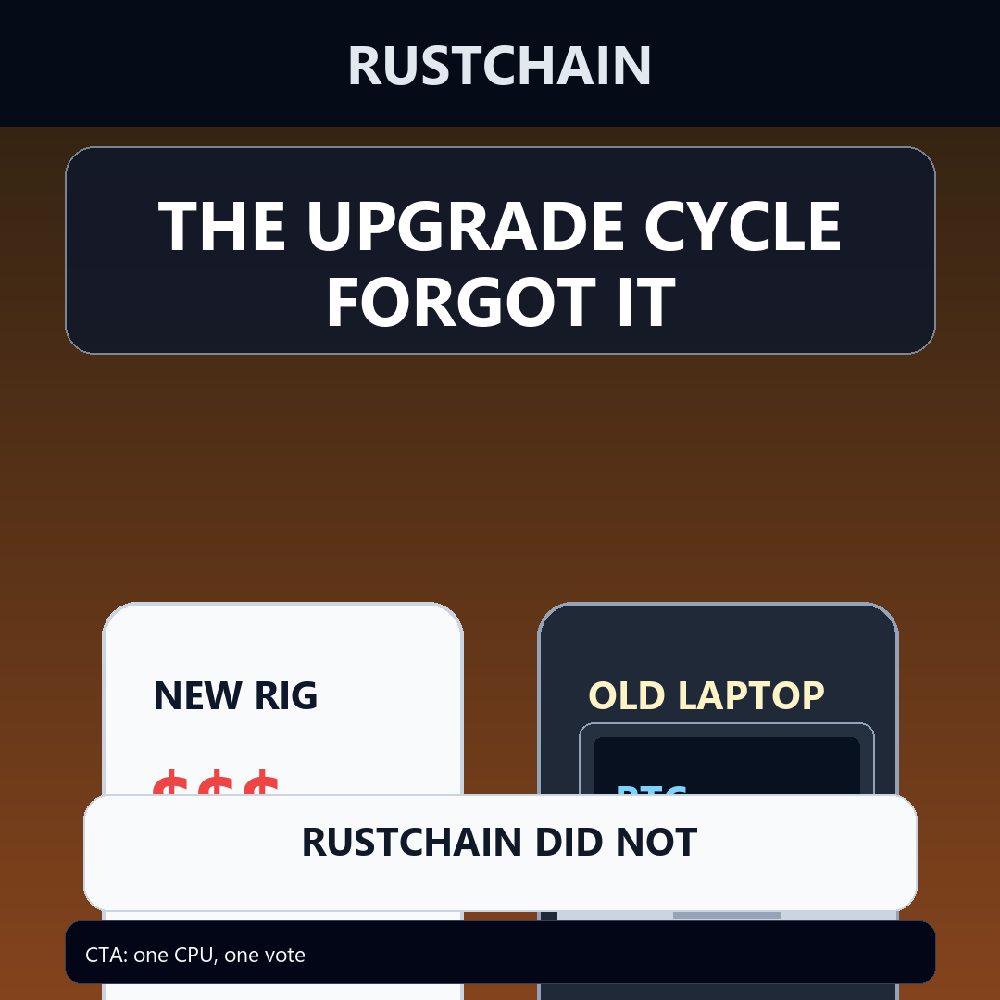
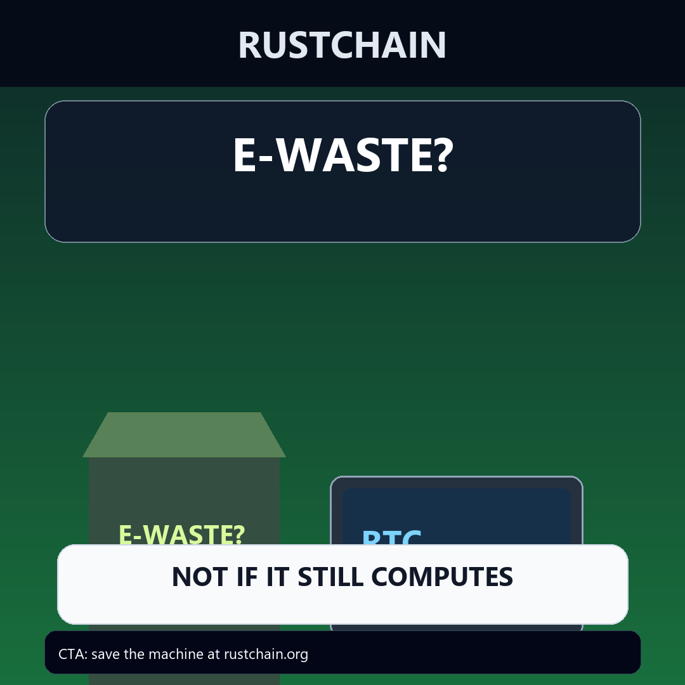
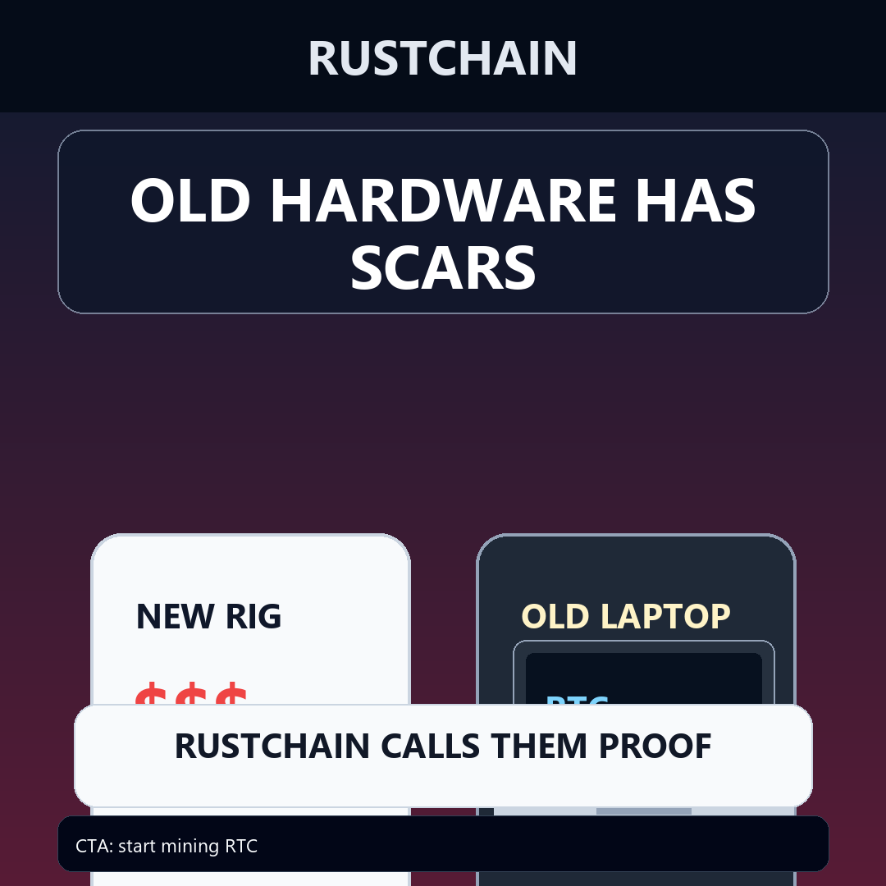

The Closet Computer
12s vertical MP4. CTA: rustchain.org.
Production awareness assets for Proof-of-Antiquity: old machines, simple starts, direct RustChain CTAs.
12s vertical MP4. CTA: rustchain.org.
10s vertical MP4. CTA: rustchain.org.
12s vertical MP4. CTA: rustchain.org.

IT SAID: I STILL BOOT

MIGHT BE IN THE CLOSET

RUSTCHAIN DID NOT

NOT IF IT STILL COMPUTES

RUSTCHAIN CALLS THEM PROOF
All copy is RustChain-specific and avoids guaranteed earnings. The intended first action is simple: find an old computer, check whether it still boots, then start at rustchain.org.